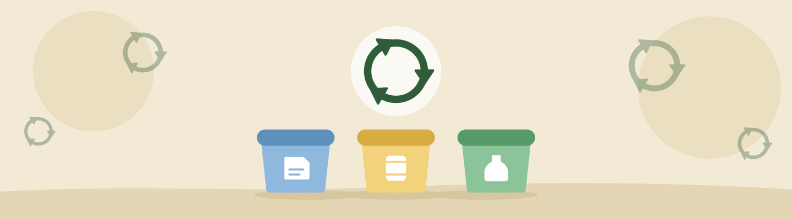

Resíduos e reciclagem
Por onde começar a separar os resíduos em casa
Separar os resíduos é uma maneira de colaborar com a reciclagem. Para começar, conheça os materiais que você descarta e descubra como funciona a coleta na sua cidade.
Conheça a coleta da sua região
Consulte a prefeitura ou a cooperativa responsável para saber quais materiais são recebidos, os dias de coleta e os pontos de entrega disponíveis. As orientações podem variar entre municípios.
Um material ser reciclável não significa que será aceito por todos os serviços de coleta. Por isso, confirme o destino antes de separar.
Organize a separação em casa
Reserve um recipiente para os recicláveis aceitos pela coleta local. Evite misturá-los com restos de alimentos e resíduos de higiene.
Papel, papelão, embalagens plásticas, metais e vidros são exemplos de materiais que podem participar da reciclagem, conforme suas condições e a estrutura disponível na região.
Prepare as embalagens
Esvazie as embalagens e remova os resíduos de alimentos. Mantenha os materiais limpos para evitar a contaminação dos recicláveis. Não é necessário desperdiçar água nesse processo.
Siga as orientações do serviço local para acondicionar os materiais, principalmente aqueles que possam causar cortes.
Alguns materiais precisam de outro destino
Pilhas, baterias e equipamentos eletrônicos não devem ser colocados junto aos recicláveis da coleta seletiva comum. Procure pontos específicos de recebimento e confirme quais itens são aceitos.
Pense também antes de descartar
Além de separar, observe se é possível evitar uma compra desnecessária, reutilizar uma embalagem ou consertar um objeto. Escolha uma mudança possível para começar na sua rotina.
Fontes e referências
Texto educativo elaborado para este projeto com apoio nas referências abaixo.
Para o descarte na sua cidade, consulte as orientações do serviço municipal.